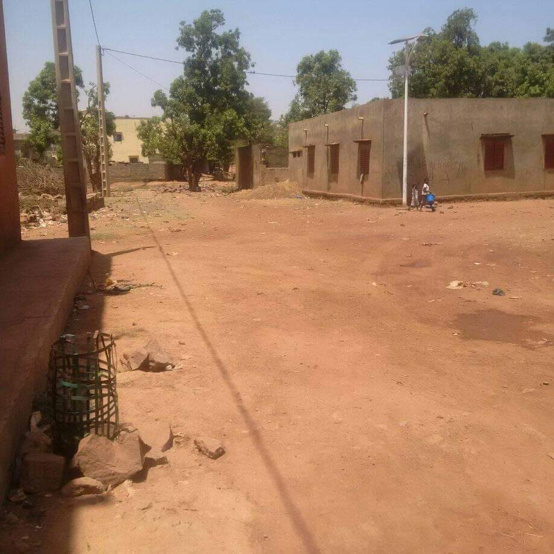

COVID 19 Hírek – Kijárási korlátozások Afrikában
Sajnos néhány hete Afrikát is elérte a koronavírus. Mind Maliban, mind Zambiában bezártak az iskolák és kijárási korlátozásokat vezettek be. Ez egy afrikai embernek, aki lényegében az utcán él és ott keresi pénzét az aznapi betevő falat megteremtéséhez különösen nagy nehézséget okoz.
Támogatottaink és családjaik méginkább küzdenek azzal a körülménnyel, hogy apró, ablaktalan szobákban zsúfoltan töltik napjaikat. 5-6m2-es alvószobán - ahol a gyerekek általában egymás mellett a puszta földön fekszenek - gyakran nyolcan is osztoznak. Ezek a kis szobák fognak közre egy udvart közös konyhával, WC-vel, amit a nagyobb család 20-30 tagja együtt használ. Ilyen körülmények között a vírus gyors terjedését szinte lehetetlen megakadályozni. Reményt egyedül a száraz, nagy meleg (főleg Maliban), a népesség fiatal kora és az afrikai szervezet esetleges erősebb ellenállóképessége adja.
Az iskolák bezárása a tanárokat különösképp sújtja. Partneriskoláink, mint tudjátok nem állami, hanem szerény magániskolák. Ha nincs tanítás, nincs fizetés sem. A szülők pedig a négy fal között nehezen tartható gyerekek miatt panaszkodnak és reménykedve várják, hogy mikor nyit újra az iskola.
Ebben a helyzetben alapítványunk tapasztalatátadással (egy hónappal előrébb járunk a vírus terén) és az otthoni tanulás megszervezésével próbál segíteni.
Mindegyik iskolánknál a távoktatás megszervezésének lehetséges módjairól egyeztetünk a tanárok és az iskolavezetés bevonásával. Terveink szerint ezzel a gyerekeket lekötjük, tudásukat legalább szinten tartjuk, valamint munkát és némi fizetést juttathatunk a rászoruló tanároknak.
A távoktatás a legszegényebb háztartásokban nagyon nehezen megoldható, de sok helyen a technológia és némi szervezés a segítségünkre van. Ahol már telefon van, és egy minimális internetelőfizetés ott a kommunikáció létrehozható az iskola és a diák között. Maliban a tanárok által javasolt megoldás egy osztályonkénti WhatsApp csoportos feladat kiosztás és ellenőrzés lenne.
Az oktatás részeként a járványhelyzetről, és a védekezés helyi körülményekhez igazodó lépéseiről is beszélünk. A bozótos iskolájának falára kikerült egy tájékoztató, amit alapítványunk rakott össze a helyi adottságokat is figyelembe véve. Jól jön most, hogy építkezni tudunk a korábbi kézmosás kampány alatt tanultakra!
Csakúgy, mint a kézmosás kampány idején a magyar és afrikai gyerekeket is oktatóplakát rajzolásra buzdítjuk. Akinek van kedve, rajzoljon és küldje el az info@kozelafrikahoz.hu címre. A rajzokat továbbítjuk Afrikába és bemutatjuk a facebook oldalunkon is. Köszönjük! Végezetül álljon itt egy magyar gyermek rajza a bamakói gyerekeknek.
Kívánunk mindannyiunknak jó egészséget!